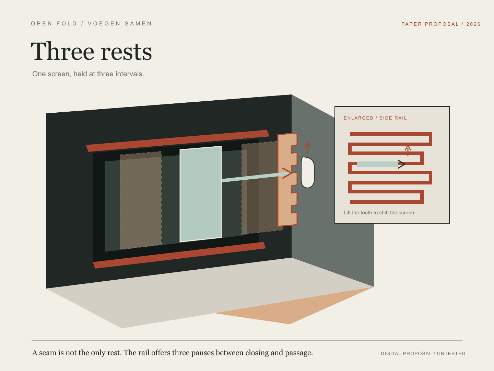

Three rests
One screen, held at three intervals.

A screen rests at closed, seam, or open. The enlarged spine makes its choices visible. The flexible tooth, rail clearance, and moving force remain untested; no physical model or construction template is shown.